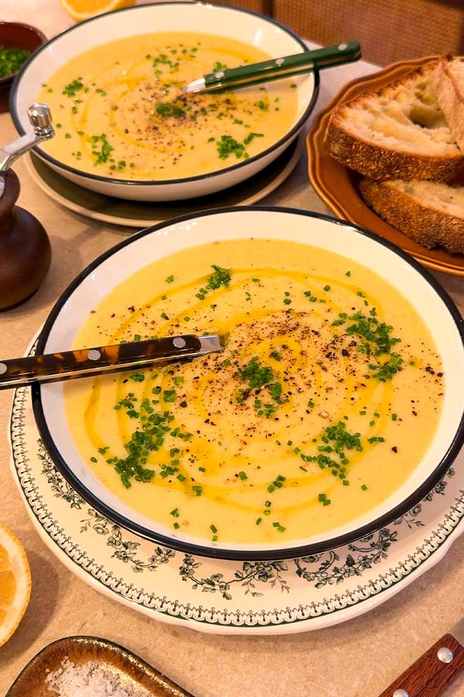
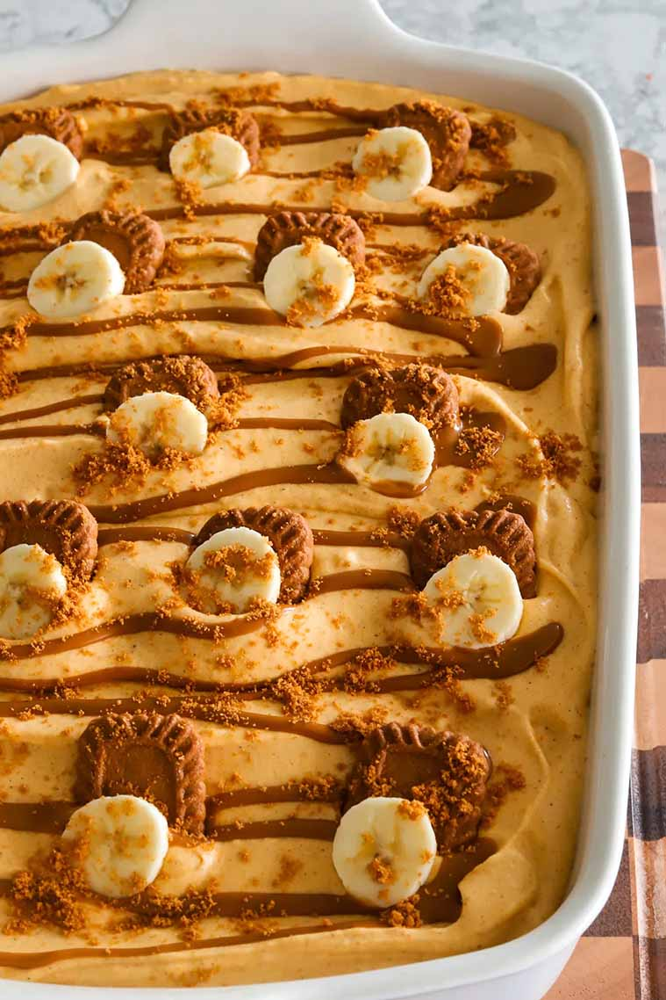

French Potato Leek Soup
This potato leek soup is inspired by my time in
Paris and it’s genuinely one of my favorite soups ever.
Simple ingredients come together into something so smooth,
comforting, and timeless. It’s the kind of soup
I could eat on repeat and never get tired of.
Prep :
15 minutes
Cook :
35 minutes
Total :
50 minutes
Yields:
5 to 6

Ingredients
SOUP BASE
- 3 tablespoons unsalted butter
- 1 tablespoon minced garlic
-
2 to 3 large leeks, white and light green parts only,
roughly chopped and well washed
- 4 to 6 thyme sprigs
- Salt, to taste
- Black pepper, to taste
- 2 pounds Yukon Gold potatoes, skin on and cubed
- 6 cups water, plus more as needed
- 2 vegetable stock cubes
- 1 cup heavy cream
- 3 tablespoons crème fraîche
- Squeeze of lemon juice
- Dash of nutmeg
GARNISH
- Chopped chives
- Olive oil drizzle
- Crack of black pepper
Instructions
-
In a large pot over medium heat, add the butter
and melt it down. Once melted, add the garlic
and saute for 1 to 2 minutes until fragrant.
Then add the leeks, season lightly with salt
and black pepper, and cook, stirring often,
until softened and translucent without browning.
-
To the same pot over medium heat, add the thyme
leaves and cook for another 1 minute, until fragrant.
-
Now add the cubed potatoes, water, and vegetable stock
cubes. Bring to a boil, then reduce to a gentle simmer
and cook for 15 to 20 minutes, or until the potatoes
are very tender and easily pierced with a fork.
-
Off the heat, blend the soup until smooth using an
immersion blender or a regular blender. Add more
liquid as needed to achieve your desired texture.
-
Optional for extra creaminess: Strain the blended soup
through a fine-mesh sieve, pressing gently with a spoon,
then return it to the pot.
-
In the soup over low heat, stir in the heavy cream
and crème fraîche until fully incorporated.
-
Off the heat, finish with a squeeze of lemon juice and a
dash of nutmeg. Taste and adjust seasoning with more salt
and black pepper as needed.
-
Serve warm, garnished with chopped chives, a drizzle of
olive oil, and freshly cracked black pepper. Enjoy warm.
Chicken Pot Pie Orzo
This chicken pot pie orzo has all the comforting flavors of
classic chicken pot pie, but in a creamy, spoonable pasta
version that comes together in one pot. It’s rich, savory,
and loaded with tender chicken, vegetables, and herbs
without the fuss of a crust. Nostalgic, comforting, and
perfect for a weeknight dinner.
Prep : 15 minutes
Cook : 30 minutes
Total :
45 minutes
Yields:
4 to 6
Ingredients
CHICKEN
-
1 pound chicken breast (about 3 pieces, medium thickness)
- 2 tablespoons olive oil, plus additional for pan
- 1 teaspoon smoked paprika
- 1 teaspoon lemon pepper
- ¾ teaspoon salt
- ½ teaspoon black pepper
- ½ teaspoon dried oregano
THE ORZO
- 2 tablespoons unsalted butter
- 1 to 2 carrots, diced (1 large or 2 small)
- ¼ large yellow onion, diced
- 1 to 2 celery ribs, diced small
- 2 teaspoons minced garlic
- 3 sage leaves, finely chopped
- 3 sprigs thyme
- Pinch of rosemary leaves, finely chopped
- 1⅓ cups orzo
- 2¼ cups chicken broth
- ½ teaspoon salt, adjust to taste
- ½ teaspoon black pepper
- ½ teaspoon smoked paprika
- ½ teaspoon red pepper flakes
- ½ teaspoon yellow mustard
- Dash of turmeric
- Dash of nutmeg
- ⅓ cup frozen baby peas
- ½ cup heavy cream or half-and-half
Instructions
COOKING THE CHICKEN
-
In a bowl, combine the olive oil, smoked paprika,
lemon pepper, salt, black pepper, and oregano.
-
Add the chicken breasts and toss well until
fully coated in the marinade.
-
Heat a large skillet or wide pot over medium heat.
Add a drizzle of olive oil.
-
Add the marinated chicken and cook for 5–6 minutes
per side, until golden and cooked through.
-
The internal temperature should reach 165°F
at the thickest part.
-
Remove the chicken from the pan and set aside to rest.
Do not wipe out the pan—keep all the drippings for
the orzo.
MAKING THE ORZO
-
In the same pan with the chicken drippings,
add the butter and let it melt.
-
Add the carrots, onion, and celery and cook
for 5–7 minutes until softened.
-
Stir in the garlic, sage, thyme sprigs,
and rosemary and cook for about 30 seconds
until fragrant.
-
Add the orzo and toast for 1–2 minutes, stirring often.
-
Pour in the chicken broth and season with salt,
black pepper, smoked paprika, red pepper flakes,
yellow mustard, turmeric, and nutmeg. Stir well.
-
Bring to a gentle simmer, then cover and cook for
10–12 minutes, stirring once or twice, until the orzo
is tender and most of the liquid is absorbed.
-
Stir in the peas and heavy cream or half-and-half
until combined.
-
Remove the pan from the heat.
-
Slice the rested chicken and arrange it on
top of the orzo to serve warm.
Pumpkin Pie Biscoff Banana Pudding
This Pumpkin Pie Biscoff Banana Pudding is a cozy
fall spin on the famous Magnolia Bakery dessert.
Layers of spiced pumpkin pudding, bananas, and Biscoff
cookies with drizzles of cookie butter make every bite
creamy, dreamy, and full of autumn flavor. It’s
the perfect no-bake treat to make ahead for gatherings
or keep in the fridge to enjoy all week.
Prep :
45 minutes
Total :
45 minutes + 6 hours (chilling time)
Yields:
12

Ingredients
BISCOFF CRUST
-
2 cups Biscoff crumbs (about one 8-ounce sleeve) +
a few tablespoons extra for topping/decor
-
½ cup unsalted butter, melted
PUMPKIN PIE FILLING
-
5.1 ounce package instant vanilla pudding mix
-
1 cup whole milk, cold
-
1 ½ cups pumpkin puree
-
2 teaspoons pumpkin spice
-
½ teaspoon cinnamon
-
14 ounce can sweetened condensed milk
-
¼ cup cream cheese, softened
-
2 ½ cups heavy cream
-
1 teaspoon vanilla extract
LAYERS
-
2 sleeves (16 ounces) Biscoff cookies, cut in half
-
2 sleeves (16 ounces) Biscoff cookies, cut in half
-
½ cup Biscoff spread, melted (for drizzling)
Instructions
-
Make the crust by adding one whole sleeve of Biscoff cookies
to a food processor and blending until finely ground, like
sand. Measure out 2 cups of crumbs and mix with the
melted butter until combined. You should have about
2 to 3 tablespoons of crumbs left — set these aside
for topping.
-
Prepare the filling by whisking together the pudding mix,
cold milk, and pumpkin puree until smooth. Let it sit
for 10 minutes to thicken. Once thickened, add the
pumpkin spice, cinnamon, sweetened condensed milk,
and softened cream cheese, whisking until completely
smooth.
-
In a separate bowl, beat the heavy cream with vanilla
extract until stiff peaks form. Using a rubber spatula,
gently fold the whipped cream into the pumpkin pudding
mixture until light and fluffy. Refrigerate until ready
to use.
-
Assemble the layers by transferring the crust mixture
to the bottom of your serving dish or cups. Press
it down tightly with the bottom of a measuring cup
or glass to form an even layer. Add sliced bananas
and halved Biscoff cookies on top of the crust.
Spread half of the pumpkin pudding mixture over
the cookies, then drizzle with half of the melted
Biscoff spread.
-
Repeat with more bananas, halved cookies, the remaining
pudding, and finish with the rest of the melted Biscoff
spread.
-
Cover and refrigerate for at least 6 hours,
or overnight, to allow the cookies to soften
and the flavors to meld.
-
Just before serving, garnish with halved Biscoff cookies,
banana slices, and the reserved crushed Biscoff crumbs.